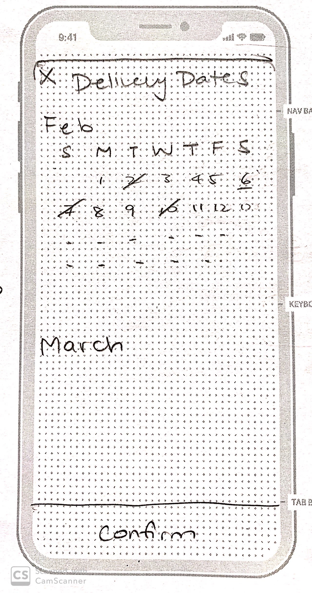
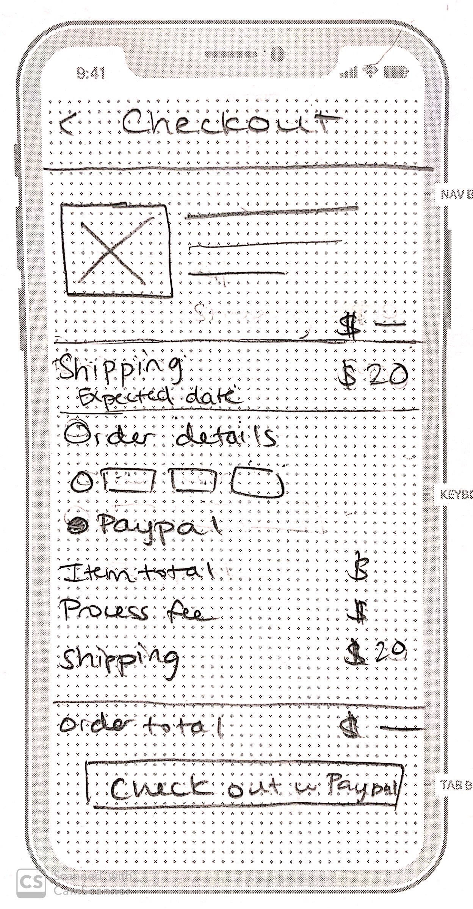
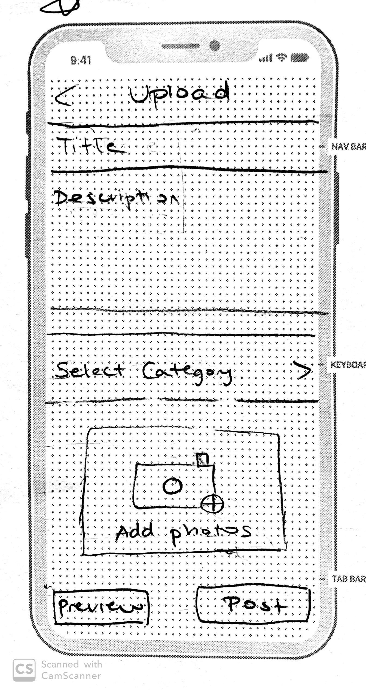
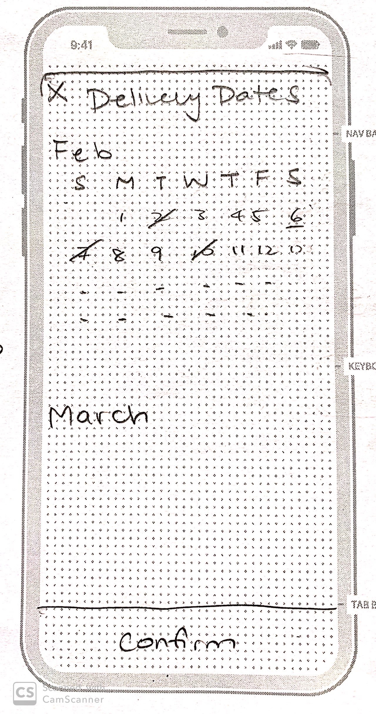
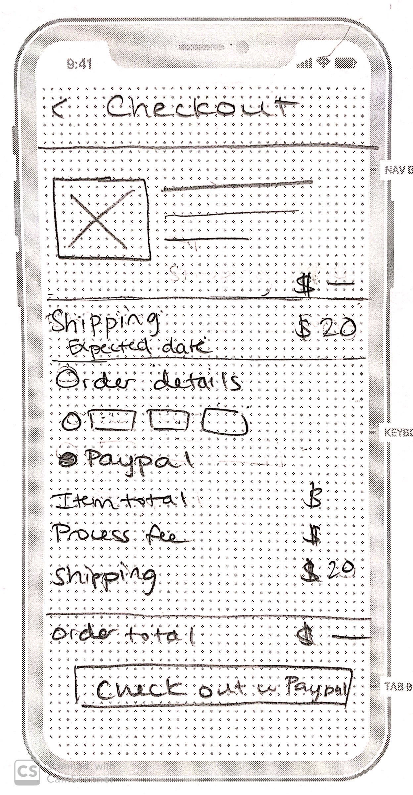
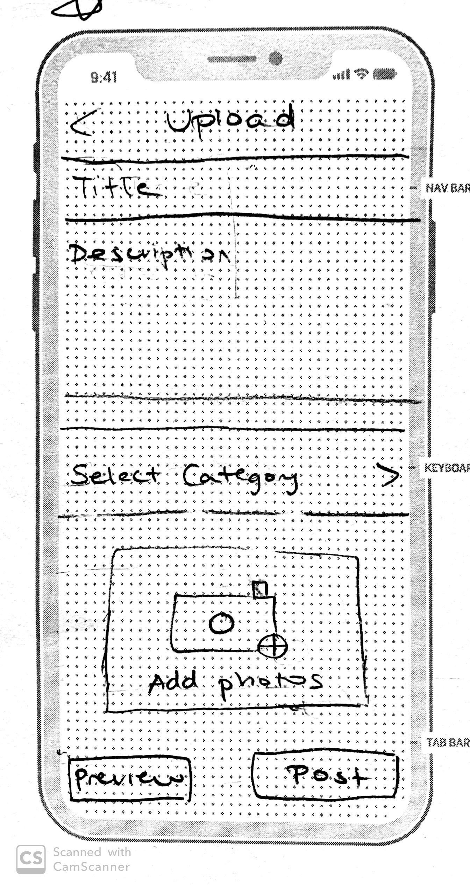
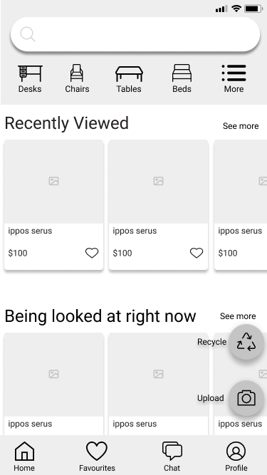
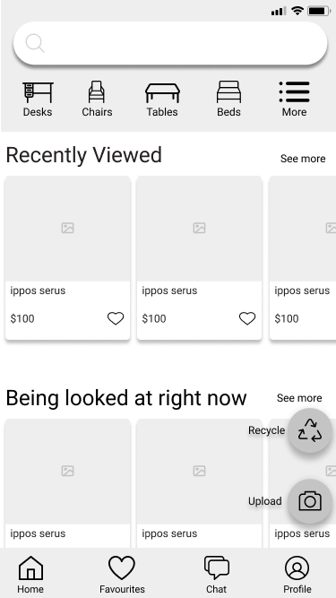

Refurnish
Project
Designing a mobile furniture marketplace app from scratch
Our Team
Mir & Veronica
Timeline
Jan 2020 - Feb 2020
Role
User interviews, user research, wireframing, prototyping, testing
Tools
Figma, Whimsical, DesignBold
"I am a college student and it's costly to buy brand new furniture. At the same time, I find most online marketplaces to be sketchy."


Where is the need?
This was the final project done at BrainStation UX Bootcamp. I partnered up with fellow UBC
student Veronica to create a mobile app Refurnish. We talked about the growing housing crisis
and the difficulties of owning or even renting a home. Although we are not ready to tackle on
such a big crisis, we put our focus on something that may help reduce the problem.
We noticed
how expensive furniture was so we thought if there was a possible market for used furniture
marketplace. We looked at variety of online marketplaces such as Etsy, Kijiji, and
Craigslist. Many items did not have enough pictures to clearly see the whole product and
there
wasn’t enough protection for possible scams. Another thing we noticed is how people
would just dump broken down furniture in the street hoping someone would pick it up. Through
user research, we hope to
discover more
required features and tackle some of the problems.
What do users want?
We realized these big marketplaces lacked proper categories for furniture. In addition to designing for trust, we want to ensure safety and privacy for both buyers and sellers. Features we want to include are general location of the seller for privacy, minimum number of pictures of furniture required to give buyers a better visual, and have a delivery system for big and heavy furniture. We also looked at recycling for furniture that is not usable.
Asking the right questions
We originally had three target markets: college students, new families, and home designers. We looked for their main needs and concerns for a furniture marketplace app. Cost, privacy, and safety were the main concerns for both college students and new families. However, we found out that home designers find the app not to their interests due to their clients not being interested in buying used furniture.
Who are our users?


Personas were very important to see what our users would want. Due to my lack of knowledge in buying/selling furniture, I was able to keep an open mind when asking questions. Again, privacy and safety were the main concerns. Key frustration was to travel to a desired location only to see the seller has not mentioned that the product is damaged" So, one of our features is to ensure sellers upload at least four pictures to clearly showcase their product.
Sitemap

We want to make sure our users can easily navigate through the app. We want to reduce as many clicks as possible but also not have a cluttered interface . We planned to use universal icons shared among famous apps we found our users used such as Facebook and Instagram to show familiarity.
Task Flows


We want to showcase through the user task flow where a user is prompted to register and log in.
We want the user to be able to browse freely and only until the user makes a choice to
buy an
item, then the log in prompt comes in.
In the creating an ad task flow, we want to showcase our feature to protect our buyers. The
sellers must
upload minimum four pictures before creating an ad. Buyers can use their own discretion if the
seller provided only suspicious angles.
Buying and Creating an Ad from the user's perspective
Understanding users’ pain points were our big focus. We made compromises after interviews trying to balance between creating an account and uploading to just wanting to browse first. We made sure users are promoted to register only when the user commits to creating an ad or purchasing an item. To make sure our users' safety takes top priority, sellers have to create an account before uploading to the app.
Buyer's Perspective


 





Our initial sketches were based on the Purchase User Flow. We wanted users to be able to quickly navigate, purchase or chat with the seller, pick delivery dates, register if not signed on and then finally check out.
The Homepage


 

I find my passion in UX design from wireframing & prototyping. I enjoyed the constant changes of frames through the non-stop user testing. The app is for the users so I tried my best not to have any personal bias in our designs. Granted, I believe this project was a positive for me due to my lack of initial knowledge with used marketplaces. We wanted to create a clean, minimalistic home page where the bottom navigation would only show if the user scrolls so it does not block the screen.
Intuitive Icons


Through user testing, we realized the “plus icon” just wasn’t intuitive enough if the user wants to recycle their furniture. Adding a separate recycle icon also cluttered the user interface. So, we added action icons, again which would pop when the user stops scrolling. We had the action buttons on the right due to most people were right-handed. In the future, we should add options to have it on the left for left-handed users.
Cards Catalog
We also changed our card navigation because our app does not have a showcase gallery. Through user testing, users tried to keep swiping but once you reached a limit in our first iteration, you can only swipe left. So, we made users be able to swipe until the user does not feel like it or found something.
Buying furniture
We made sure our users’ concerns were fixed in our purchasing process. Seller’s rating would be clearly visible, the seller also has their general location on Google Maps so buyers can estimate travel time, and sellers must have minimum four pictures uploaded to create an ad. In addition, we gave options for both pick and delivery. Delivery will be done with a local company at an extra fee for their services. For extra caution, we made PayPal our only option of payment. Through user interviews, PayPal had the best protection against scams and were widely used.

Picking up furniture
Have a large vehicle? Or don’t want to pay the extra cost for delivery? We made the app easy for users to pick up as well. Like many online marketplaces, we allowed for easy communication between buyers and sellers. Sellers can set a schedule for buyers to pick their best times.

Selling furniture
Buyer’s main concern was possible damaged product that may be sold off as new. By having a minimum number of pictures required, it will be a lot harder for sellers to deceive the buyers.

Helping the environment
Our last main feature was allowing to dispose broken or unwanted furniture. Again, users can pay for a pickup service, or check to see their nearest recycling site.

Don't be afraid to make changes


Never stop iterating. What I enjoy about UX is to never be afraid of user feedback and be always
willing to adapt and make changes. Initially, we wanted “Recycle” to be one of our focus for
users.
However, most users were confused if it was part of the logo or an icon. They were uncertain if
it
was clickable.
Additionally, many did not put recycling as their top priority in using our app, but prefer
browsing
more. Also, many users commented that our bottom navigation was distracting even if it would
only
show up when the user stops scrolling. So, we decided to remove the bottom navigation in favour
of
the hamburger menu.
Adding a single icon on top of the search bar created confusion among users, so we decided to
remove
them all together and put them all in the hamburger menu. We also squished the top navigation to
remove even more visual clutter. Again, we have a single action icon as users are more likely to
sell furniture rather than recycle them.
High Fidelity
Closing thoughts
Taking the BrainStation UX course was a great experience. The instructors were all very
helpful
in
guiding us to be better UX designers. I enjoyed spending weeks constantly iterating and
iterating
again through user testing and improving our app to meet user needs.
In the future, we could have
made our app more user friendly by adding options for left-handed users. Also, for extra
precaution,
we should have added phone verification in addition to just creating an account. Another
thing
to
note was whether if we wanted home type option or not. Some users prefer the extra
privacy of
only
disclosing to buyers if they ask for it while pickup buyers wanted to know the type of
home the
sellers lived in such as a four-story apartment with no elevator. We decided to have the
home
type
disclosed between the chat communication rather than forced option during the creation
of an ad.